Democratising
investment analysis.
An institutional-grade research desk for equities and mutual funds — built for the individual investor first, and for the institutions that serve them next.
Arjun Agarwal & Krati Mittal · 2026
Great analysis should not be
a privilege of capital.
A hedge fund pays for terminals, analysts and models. A retail investor gets a price ticker and a WhatsApp tip. VroomStocks closes that gap — democratising investment analysis so that individuals and organisations can build conviction, not just opinions.
Democratise
The same fundamentals, filings, valuation models and screens the professionals use — in one place, at consumer pricing.
Empower
Not signals to obey, but evidence to reason with. Every number is traceable to a filing or an exchange feed.
Build conviction
Conviction is what makes an investor hold through a drawdown. It comes from understanding, and understanding is a product problem.
India onboarded a generation of
investors — and gave them no tools.
What the investor actually faces
- Data is scattered. Price on one app, filings on another, fund holdings on a third, none of it joined.
- Analysis is shallow. Broker apps optimise for trade frequency, not for understanding a business.
- Research is gated. Real terminals cost lakhs a year and are sold to institutions.
- Advice is noise. Finfluencer tips fill the vacuum left by a ~1:70,000 analyst-to-investor ratio.
The consequence
Investors buy on stories and sell on fear, because they never had the apparatus to form an independent view. The gap isn't access to markets — India solved that. The gap is access to analysis.
Figures are latest publicly reported market statistics (CDSL/NSDL, NSE, AMFI, SEBI), mid-2026, rounded.
One research desk, from raw filing
to investment decision.
A web platform that ingests company filings, exchange feeds and fund disclosures across India and the US, normalises them into one model, and gives every user a private, persistent workspace to analyse, value and track businesses.
Ingest
Filings (SEC XBRL, India XBRL), exchange feeds, fund disclosures, corporate announcements, insider & shareholding data.
Normalise
One schema across two markets and many providers, with a resilient no-key fallback chain so the app keeps working when a source fails.
Analyse
Fundamentals, quality scoring, DCF & intrinsic value, technicals, backtests, screeners, mutual-fund look-through.
Decide
A private watchlist and portfolio you own, with your own overrides, notes and thesis attached to every holding.
The design principle
Every derived number — a quality score, an intrinsic value, a margin trend — must be traceable back to a primary source. No black boxes. That is what separates a conviction tool from a tip service.
Shipped and in production at
vroomstocks.com
Stocks & watchlists
A dense, spreadsheet-grade table over your universe: growth, margins, returns, leverage, ownership, moat and risk notes — every field user-overridable, with overrides that expire when a fresher quarter lands.
Financial statements
Income statement, balance sheet and cash flow assembled from SEC XBRL (US) and India XBRL — annual, biannual and quarterly, from the filings themselves.
Valuation & DCF
A client-side valuation engine and DCF workbench: build the intrinsic-value case, flex the assumptions, and see margin of safety against live price.
Technicals & charting
Daily candles, indicators, RSI and multi-year history with a charting surface and backtesting over the same data the fundamentals run on.
Screeners
Equity screener over the normalised fundamental model, plus a mutual-fund screener with category averages and holdings-level metrics.
Mutual funds & portfolio
Fund detail with holdings look-through, AMFI NAV data, and CAS import so an investor's real portfolio lands in the tool in one step.
India depth
NSE option chains, exchange announcements, insider trading and shareholding-pattern data — the India-specific surfaces generic tools skip.
AI Insight
LLM-generated company insight grounded in the structured filings and financials already in the system — explanation on top of evidence, not instead of it.
Strategy & simulation
A strategy engine, trade configurations and paper-trade simulation to test a thesis before any capital is committed.
Earnings call summaries
AI-generated, per-quarter summaries of what management actually said on the call — key points, guidance, tone and themes, each tied back to the transcript.
Email alerts
Price, technical-signal, shareholding, screener and earnings triggers, consolidated into one digest per cadence — built to be the pull-to-push engagement layer.
Not mockups — live screens from
vroomstocks.com

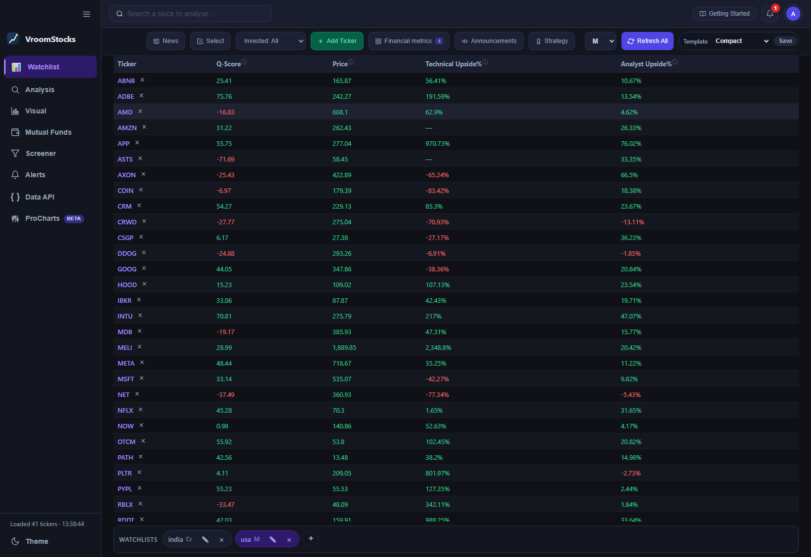
Stocks & watchlists
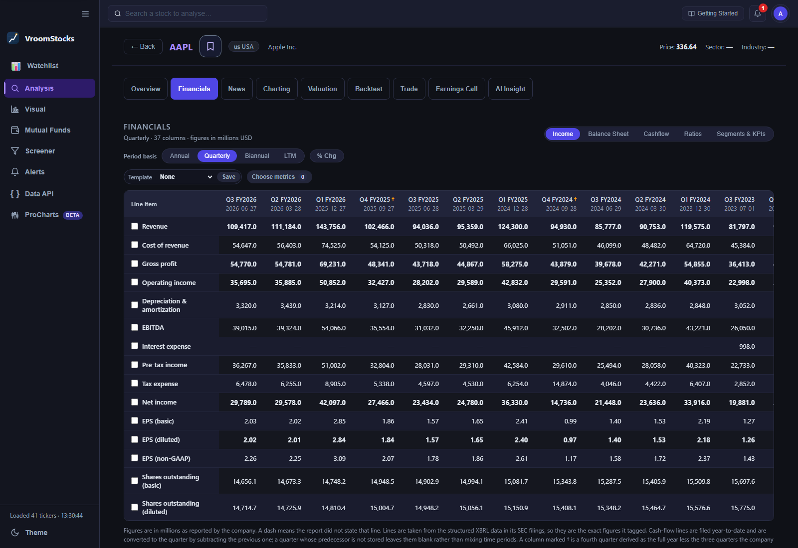
Financial statements
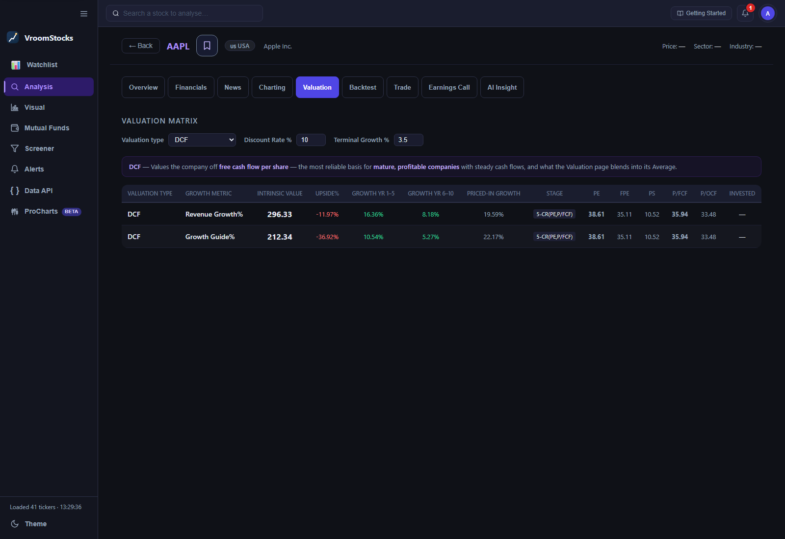
Valuation & DCF
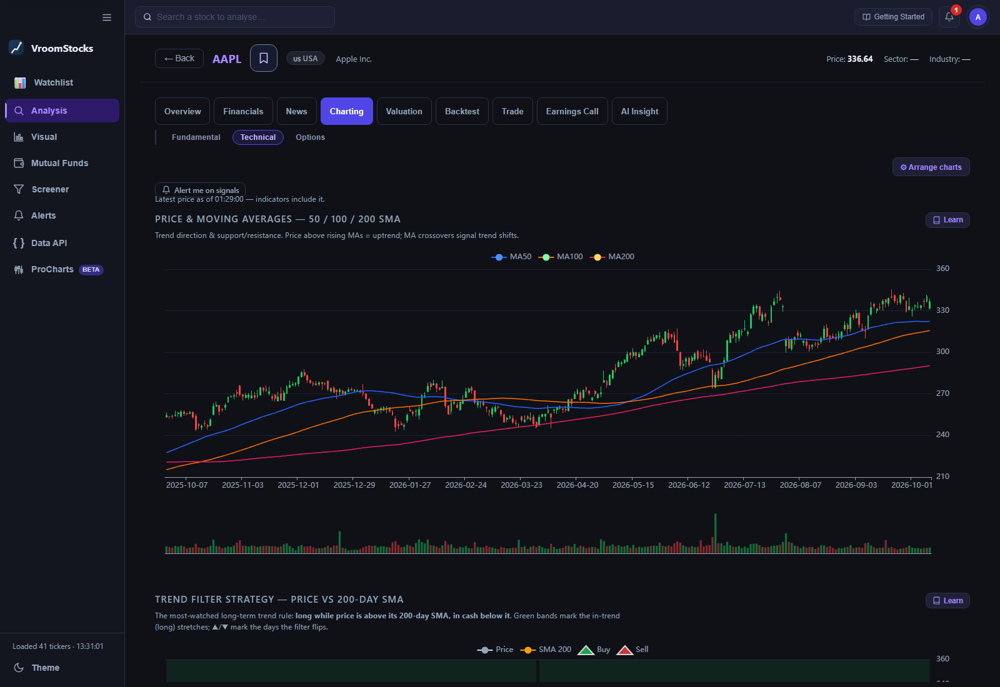
Technicals & charting
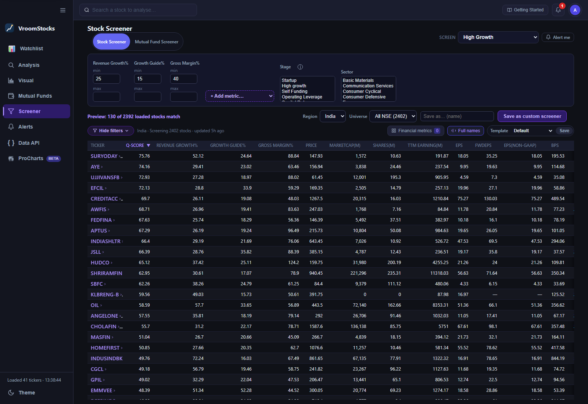
Screeners
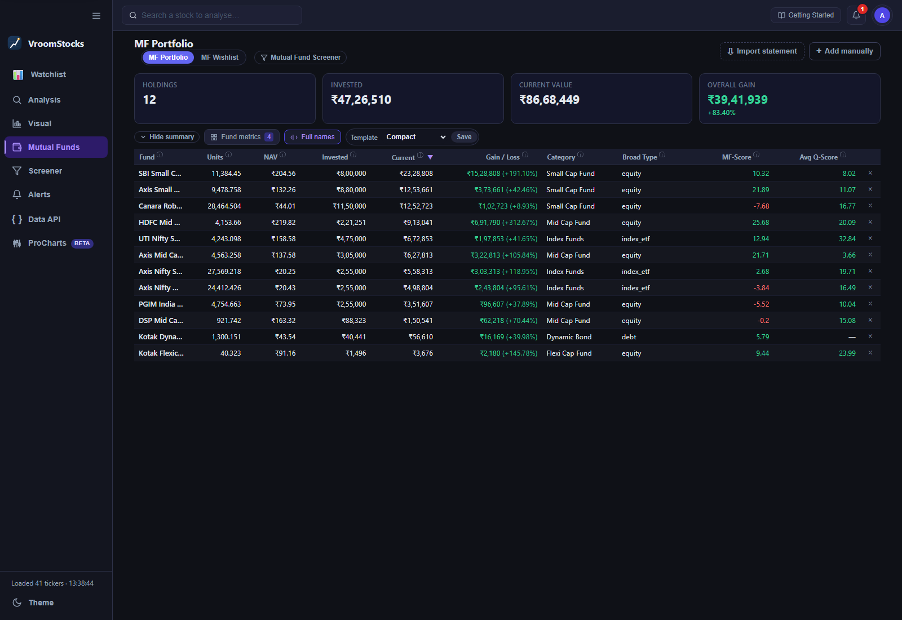
Mutual funds & portfolio
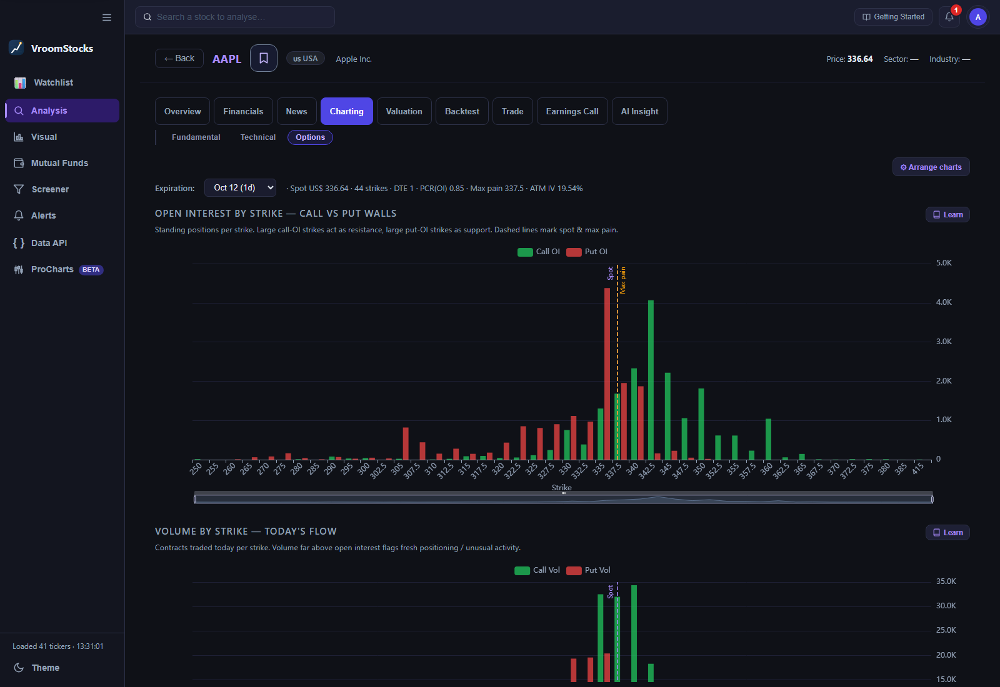
Options analytics · US example
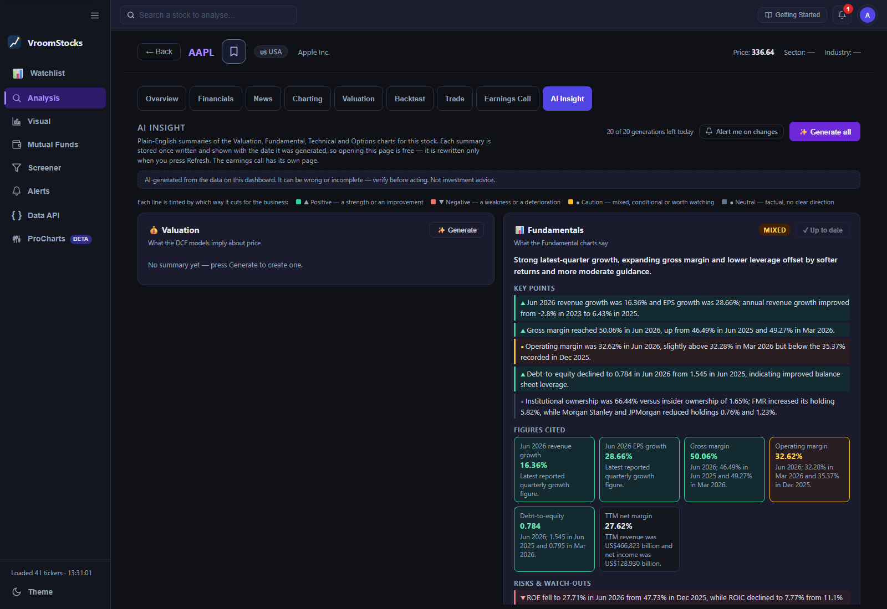
AI Insight
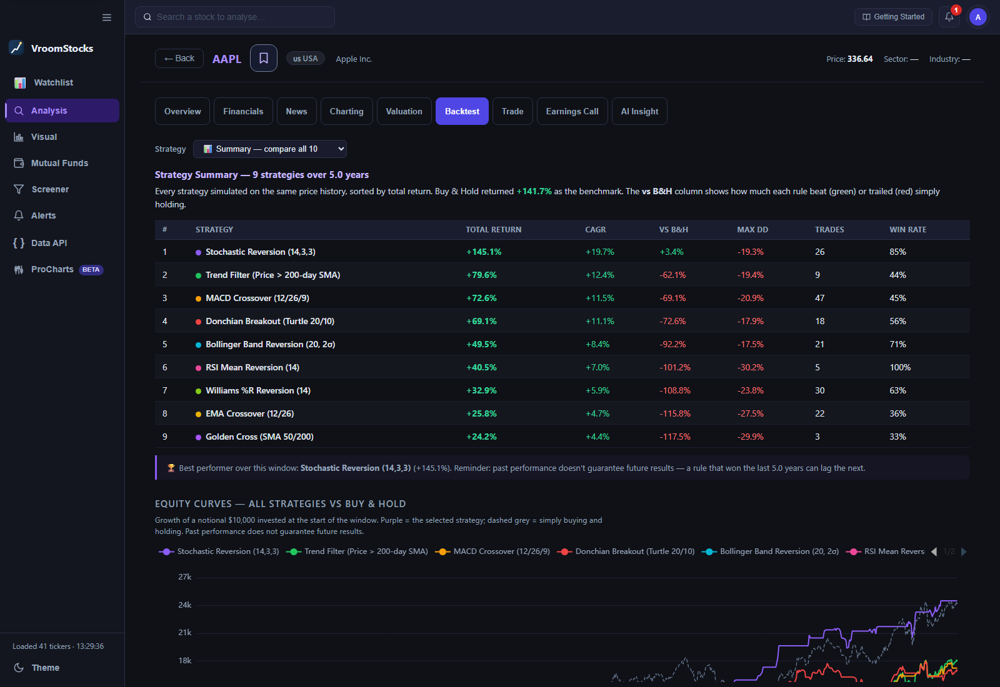
Strategy & simulation
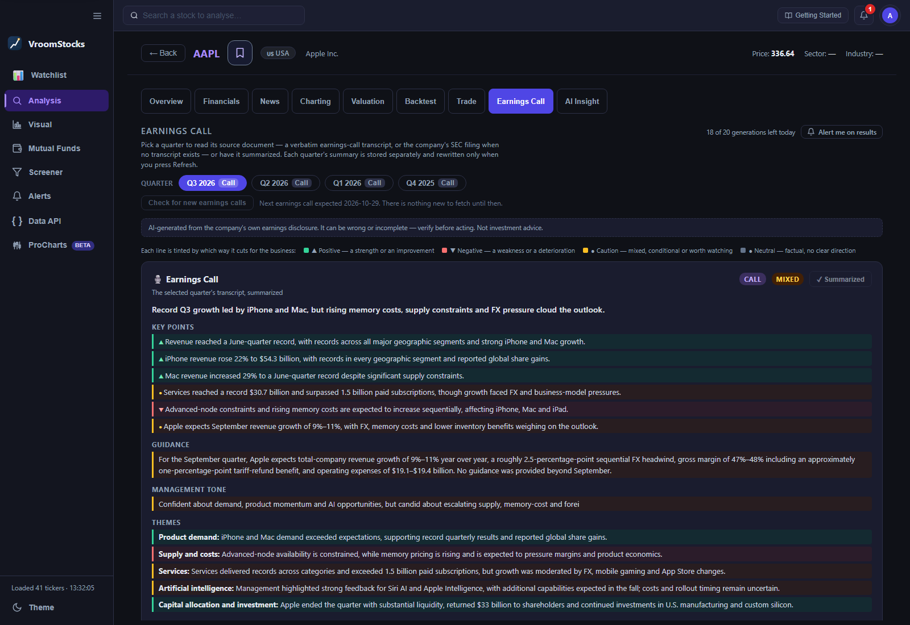
Earnings call summaries
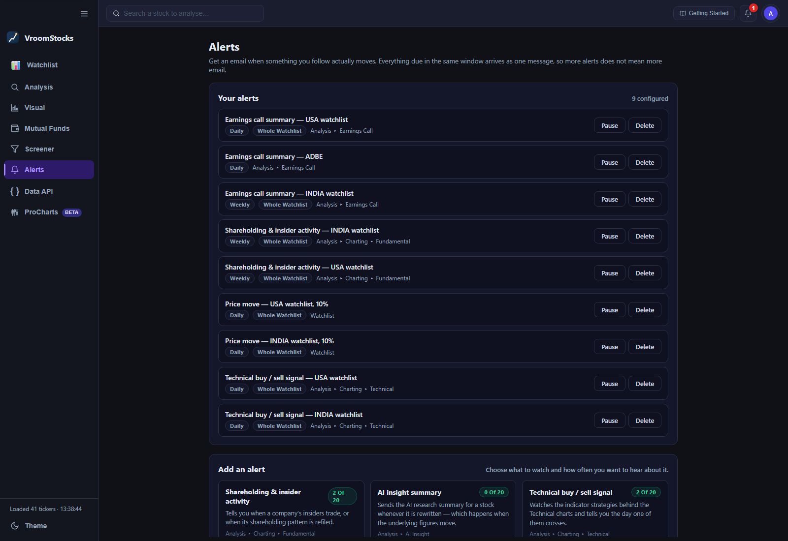
Email alertsCaptured live from a signed-in account, October 2026. Click any screenshot to enlarge it in a popup. Press Escape to close.
Not a prototype.
A production system.
Platform
- Flask + Azure SQL on Azure App Service, custom domain, PWA-installable.
- Auth & isolation — Google and Azure sign-in; every row scoped to its owner.
- Resilient ingestion — a keyless fallback chain (yfinance → FMP → Stooq/SEC EDGAR → NSE) so a single provider outage never blanks the product.
- Layered caching — per-user freshness, cross-user single-flight and bounded series caches, tuned for provider rate limits.
Engineering discipline
- Regression-tested invariants — including an AST-level test that structurally forbids the concurrency bug class that once took production down.
- Bounded upstream I/O — every third-party call has an enforced timeout, even where the library exposes none.
- Numeric parity tests between the server model and the client-side valuation engine.
- Admin & ops console — sync scheduling, warm jobs, telemetry via Application Insights.
Translation: the hard, unglamorous part — multi-market data reliability — is already done. That is the moat and the launchpad.
From research tool
to investment operating system.
Shipped — Research core
Multi-market fundamentals, filings, valuation, technicals, screeners, mutual funds, portfolio, AI insight, earnings call summaries and email alerts.
1 · Newsletters & alert expansion
Email alerts are already live for price moves, technical signals, shareholding, screeners and earnings. Next: expand that foundation into personalised research newsletters — the engagement and retention layer, and the top of the acquisition funnel.
2 · Broker integration
Live holdings and order placement through Indian broker APIs. Closes the loop between analysis and action, and makes the portfolio real-time instead of imported.
3 · VroomAI
A research analyst that answers in natural language over the full, structured corpus — filings, financials, holdings, announcements — with every claim cited to its source. Not a chatbot bolted on; an agent over a database we already own.
4 · Algorithmic trading
Promote the existing strategy engine and backtester into live, rule-based execution — systematic strategies an individual can author, test and deploy without writing code.
5 · Portfolio import, analysis and Insights
Build on the existing mutual-fund CAS import with broader portfolio imports and consolidated analysis across holdings. Surface allocation, concentration, overlap and performance insights so investors can understand their portfolio as a whole, not just one security at a time.
6 · Enterprise APIs
Sell the normalised India+US fundamental, filing and fund data as an API to RIAs, wealth platforms, fintechs and broker apps. B2B revenue on infrastructure already built for B2C.
Why this order
Each step builds on the previous one's capabilities. Newsletters and alerts create habit; brokers connect research to action; VroomAI adds explanation; algo adds systematic execution. Portfolio analysis brings those capabilities together across holdings; enterprise APIs turn the data platform into a second, higher-margin business.
TAM / SAM / SOM
A bottom-up estimate of the Indian investment-analysis market — the spend on research, analytics and decision tooling, not on brokerage itself.
Why now
Retail participation has structurally re-rated post-2020, SEBI has tightened the finfluencer channel, and account aggregator + broker APIs have made integration cheap for the first time.
Why us
The multi-market data spine is already built and running. Competitors sell one market, one asset class, or one feature; VroomStocks joins fundamentals, filings, funds and valuation in one model.
Two revenue engines
B2C subscriptions fund the product; B2B data APIs monetise the same infrastructure at far higher margin and much lower churn.
Bottom-up model built on publicly reported CDSL/NSDL, NSE, AMFI and SEBI statistics (mid-2026). Ranges are estimates and assumptions are stated on-slide; they are not a forecast.
Two engineers who have
built systems at scale.
15 years leading and managing high-performance engineering teams, currently at Microsoft (Hyderabad). IIT Guwahati alumnus. Builds and writes on business fundamentals, margins and valuation — VroomStocks is the tool he wanted as an investor and could build as an engineer.
14+ years in software engineering and team leadership. Principal Software Engineer at Microsoft; previously Expedia and PayTM. Leads large-scale distributed systems work and mentors engineers on system design — the architecture discipline behind the platform.
Why this team
The hardest part of this business is not the UI — it is running reliable, normalised, multi-market financial data at low cost. That is exactly the problem two senior distributed-systems engineers are built to solve, and it is already solved and in production.
Take the vision forward
with us.
Commercial collaboration
- Brokers & wealth platforms — embed VroomStocks research inside your app; we bring the analysis, you bring the distribution.
- RIAs, research houses & AMCs — white-labelled screening, valuation and fund look-through for your clients.
- Fintechs & data buyers — licence the normalised India + US fundamentals, filings and fund API.
- Content & community partners — co-built newsletters and research distribution.
Join us
- Founding engineers — data platform, algo/execution, and applied AI for VroomAI.
- Finance & research talent — to shape scoring, valuation methodology and editorial.
- Growth & partnerships — to own the newsletter funnel and B2B pipeline.
- Advisors & angels — capital markets, regulatory and go-to-market depth in India.
What we're looking for right now
Design partners for the Enterprise API and broker integration tracks, and the first cohort of collaborators to build newsletters, VroomAI and algo trading on top of a platform that already works.
Every investor deserves
a research desk.
We've built the hard part. Help us put it in the hands of the next hundred million investors.
VroomStocks · Democratise investment analysis. Empower individuals and organisations to build conviction.